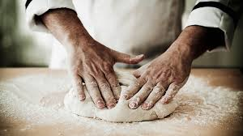

Below is a quick and easy guide to creating Homemade Pizza
The pizza dough recipe makes enough dough for two 10 to 12 inch pizzas.
Next time I'll be a bit more patient with stretching out the dough so I can get it even thinner.
Ingredients for the Pizza Dough
Place the warm water in the large bowl of a heavy duty stand mixer.
Sprinkle the yeast over the warm water and let it sit for 5 minutes until the yeast is dissolved.
Add the flour, salt, sugar, and olive oil and begin to knead.
Knead the pizza dough for about 5-7 minutes.
The dough should be a little sticky, or tacky to the touch. If it's too wet, sprinkle in a little more flour.
Spread a thin layer of olive oil over the inside of a large bowl. Place the pizza dough in the bowl and turn it around so that it gets coated with the oil.
Cover the dough with plastic wrap.
For a quick rise, place the dough in a warm place (75°F to 85°F) for 1 1/2 hours.
For a medium rise, place the dough in a regular room temperature place (your kitchen counter will do fine) for 8 hours. For a longer rise, chill the dough in the refrigerator for 24 hours (no more than 48 hours).
The longer the rise (to a point) the better the flavor the crust will have.
Below is an example of a well risen dough.
Remove the plastic cover from the dough. Dust your hands with flour and push the dough down so it deflates a bit. Divide the dough in half.
Form 2 round balls of dough. Place each in its own bowl, cover with plastic and let sit for 15 minutes (or up to 2 hours).
Working one ball of dough at a time, take one ball of dough and flatten it with your hands on a lightly floured work surface.
Starting at the center and working outwards, use your fingertips to press the dough to 1/2-inch thick.
Turn and stretch the dough until it will not stretch further.
Use your palm to flatten the edge of the dough where it is thicker. Pinch the edges if you want to form a lip.
